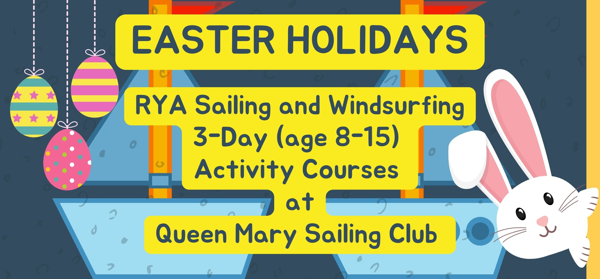
3 DAY COURSES - Easter Activities!
Welcome to our page for booking 3-day activity courses for sailing, windsurfing, keelboating, and multi-activity. They are generally scheduled from Wednesday to Friday, for Easter 2026 courses will run from Tuesday to Thursday to avoid the busy Easter weekend.
If you find that your chosen course is full, please join the waiting list. We regularly monitor availability and will extend capacity where possible.
Easter Holidays and Half Term Dates 2026
- Tuesday 31st March to Thursday 2nd April
- Tuesday 7th April to Thursday 9th April
- Wednesday 27th May to Friday 29th May
- Wednesday 21st October to Friday 23rd October
- Wednesday 28th October to Friday 30th October
Sailing
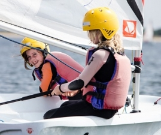
Learn to Sail (8-11yrs): Stage 1 (3-day course)
3 day course, 0930 to 1630
A fun and action-packed introduction to the sport of dinghy sailing
Work towards RYA Stage 1
£245.00
Book Now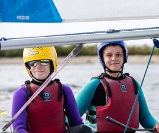
Learn to Sail (10-15yrs): Stage 1 (3-day course)
3 day course, from 0930 to 1630
A fun and action-packed introduction to the exciting sport of dinghy sailing
Work towards RYA Stage 1
£245.00
Book Now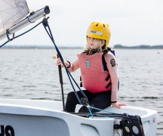
Next Steps Sailing (8-11yrs): Stage 2 (3-day course)
Our Next Steps Sailing course is structured around the RYA Stage 2 syllabus where you will look at sailing single handed and in many different directions! This course runs over 3 full days 09:30 - 16:30. This course is aimed at those with RYA Stage 1 looking to work towards RYA Stage 2.
£245.00
Book Now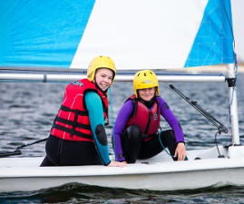
Next Steps Sailing (10-15Yrs): Stage 2 (3-day course)
Our Next Steps Sailing course is structured around the RYA Stage 2 syllabus where you will look at sailing single handed dinghies in many different directions! This course is designed for those who have already achieved their RYA Stage 1 and would like to work towards finishing RYA Stage 2.
£245.00
Book Now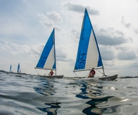
Improver Sailing (9-15yrs): Stages 3 (3-day course)
3 day course, 0930 to 1630 in Picos or Qubas
Build on the skills you learned your stage 2 skills progressing towards stage 3.
Sailing independently for the first time.
£245.00
Book Now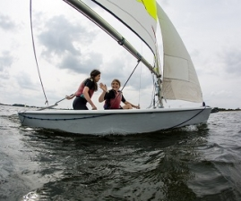
Sailing Competence: Stage 4 (3-day course)
3 day course, 0930 to 1630
Learn double-hander skills as both helm and crew.
Work towards RYA Stage 4
£245.00
Book Now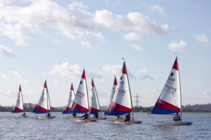
Intermediate Racing (3-Day)
An excellent chance for Sailors to continue to improve their racing ability. This course works towards the RYA Club Racing certificate. Practice on mark roundings, sail controls and starting form some of the topics on this course.
£245.00
Book Now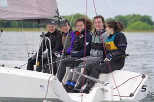
Youth Keelboat Week (14-17yrs) 3-Day Course
Come and give keelboating a go! If you've already got your RYA Stage 3 and are age 14-17 years old, sign up now to try out our RS21s. Enjoy a fun filled week learning how to use the boat and possibly the spinnaker!
£245.00
Book Now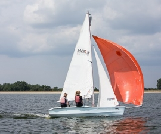
Advanced Sailing (3-day course)
3 day course from 0930 to 1630
Two RYA Advanced Modules rolled into one great course
RYA Seamanship Skills and RYA Sailing with Spinnakers
£245.00
Book Now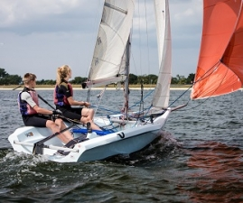
Performance Sailing (14-17YRS) 3-day course
3 day course from 0930 to 1630
Discover what it's like to sail performance double handers, such as the RS200, while learning skills that maximise boat speed in every aspect of sailing.
Tweak your sailing skills further than they have been tweaked before.
£245.00
Book NowWindsurfing
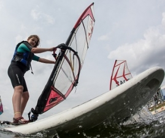
Improver Windsurfing (9-15yrs): Stages 3/4 (3-day course)
3 day course, 0930 to 1630
Progressing towards RYA Stage 3 or 4
RYA Fastforward Formula: Vision, Trim, Balance, Power, Stance
£245.00
Book Now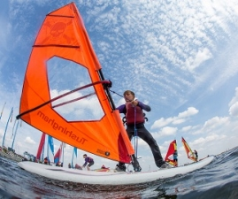
Learn to Windsurf (9-15yrs): Stage 1 (3-day course)
3 day course from Wednesday to Friday, 0930 to 1630
A fun and action-packed introduction to the sport of windsurfing
Work towards RYA Stage 1 & 2
£245.00
Book Now
Next Steps Windsurfing (9-15yrs): Stage 2 (3-day course)
Next Steps windsurfing follows the RYA Stage 2 syllabus and aims to get you windsurfing upwind and downwind, as well as looking at tacking and gybing to make you a more competent windsurfer. You must have completed your Stage 1 windsurfing course and be looking to work towards RYA Stage 2. This course runs over 3 full days: 09:30 - 16:30.
£245.00
Book NowMulti Activity
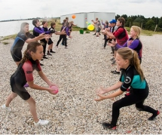
Multi Activity (10-15yrs): Waterfun (3-day course)
3 day action packed activity course from 0930 to 1630. Sailing, windsurfing, kayaking, stand-up paddleboarding, and team games.
£245.00
Book Now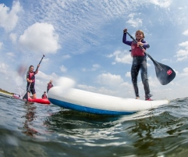
Multi Activity (7-10yrs): Splash (3-day course)
3 day activity week from 0930 to 1630. Action packed with sailing, kayaking, stand up paddleboarding, treasure hunts and games
Time permitting, an expedition may be arranged to seek out the sea badger......
£245.00
Book Now